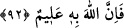

SEVDİKLERİNİZDEN
HARCAMADIKÇA
92. Sevdiğiniz şeylerden (Allah yolunda) harcamadıkça “iyi” ye eremezsiniz. Her
ne harcarsanız, Allah onu hakkıyla bilir.
“Aslâ iyiliğe eremezsiniz” Yani ey mü’minler, uğrunda yarışanların, birbirlerini
geçmeye çalıştıkları o gerçek iyiliğe ulaşamazsınız; onun doruğuna varamazsınız; iyiler
zümresine katılamazsınız. Yahut, Allah’ın cenneti, rızâsı, rahmeti ve sevabı mânalarına
gelen Allah’ın birri’ne nâil olamazsınız.
Allah’ın katında bulunan değerleri isteyerek sevdiklerinizden, meftûn olduğunuz,
hoşlandığınız değerli, sevgili mallarınızdan bir kısmını Allah yolunda sarf etmedikçe
iyiliğe eremezsiniz. Bu infak mutlak olarak bir şeyi sarfetmek mânasında kullanılarak
amellerin ortaya konulması ve canların fedâ edilmesini de kapsayacak biçimde umûmî
kabul edilebilir.
Bu âyette birre ulaşmanın ne kadar değerli bir şey olduğunu gösteren apaçık işâretler
vardır.
“Ne harcarsanız, Allah onu bilir.” yani, hoşunuza giden temiz bir şeyi de infak
etseniz; kerîh gördüğünüz, işe yaramaz bir şeyi de infak etseniz Allah bilir, demektir.
Değerli olsun âdî olsun, Allah infak edeceğiniz şeye göre size karşılık verecektir.
Çünkü Allah, infak edeceğiniz şeyi tam bir bilgi ile bilmektedir. Çünkü, O’nun zâtına ve
sıfatlarına hiçbir şey gizli kalmaz.
Burada insanlar, açıkça temiz ve güzel olanı infak etmeye teşvik edilirken âdî ve
değersiz olanı infak etmekten sakındırılmışlardır. O halde, matlûba ulaşmak, ancak
sevilen bir şeyi infak etmekle mümkün olabilir.
Bu sebepledir ki selef-i sâlihîn, bir şey çok hoşlarına gittiği zaman onu ihtiyaç
duyacakları bir gün Allah için harcamak üzere saklarlardı. İnsanoğlu, sevdiği bir şeyi,
ancak o şeyi harcadığında ondan çok daha iyisine ulaşabileceğine inandığı bir şeye
karşılık infak eder.
İnsan sânîe (san’atkâr, yapıcı), âlim ve kadir bir varlığa kesin olarak inanırsa; ba’sa,
hesap ve cezaya tam anlamıyla îman ederse; zerre kadar hayır işleyenin bunun
karşılığını göreceğine sarsılmaz bir şekilde inanırsa işte ancak o zaman sevdiği bir şeyi
infak edebilir.
Bu açıklamadan, kişinin dünyada sevdiği bir şeyi ancak bütün bu güzel dînî hasletleri
bir arada bulundurduğu zaman infak edebileceği ortaya çıkmaktadır.